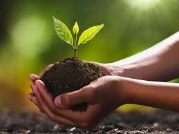

Soil & Crop Database

Weather & Climate Data

Pest & Disease Information

Fertilizer & Irrigation Guidelines
Market & Economic Resources
Farmer Support & Learning
Soil & Crop Database
Weather & Climate Data
Pest & Disease Information
Fertilizer & Irrigation Guidelines
Market & Economic Resources
Farmer Support & Learning
Understanding soil properties is crucial for healthy crops. Learn about soil nutrients, pH levels, and how different crops benefit from various soil types.
Key Information:
🪵 Soil Types: Sandy, clayey, and loamy soils support different crops.
🌿 Crop Suitability: Legumes improve soil nitrogen, while root crops help break compacted soil.
🌾 Soil Nutrients: Rotating crops helps maintain balanced nutrient levels in the soil.
🔄 Crop Rotation Benefits: Reduces pests, enhances soil fertility, and prevents soil depletion.
Weather conditions greatly impact crop growth. Learn how to plan rotations based on rainfall, temperature, and seasonal changes.
Key Information:
🌧 Rainfall Patterns: Helps decide which crops to plant based on available water.
🌡 Temperature Ranges: Some crops thrive in cold weather (wheat, barley), while others need warmth (rice, maize).
❄ Frost & Drought Risks: Knowing frost-prone periods helps prevent crop loss.
🌱 Growing Seasons: Some crops need specific temperatures; for example, rice grows best in warm and humid conditions.
🔍 Weather Forecasting: Farmers can use weather data to time planting and irrigation efficiently.
Discover how to identify and control common pests and diseases naturally, ensuring high-yield harvests.
Pests and diseases cause significant crop loss every year. Proper pest management strategies can increase yields and reduce losses.
Key Information:
🦗 Common Pests: Aphids (attack vegetables), Locusts (destroy large crop areas), Stem borers (damage rice and maize).
🌱 Common Crop Diseases: Powdery mildew (affects fruits and vegetables), Rust (common in wheat), Blight (damages potatoes and tomatoes).
🐞 Natural Pest Control: Using ladybugs to eat aphids, rotating crops to break pest life cycles, using neem oil as an organic pesticide.
🧪 Chemical vs. Organic Solutions: Farmers must balance between chemical pesticides and eco-friendly methods.
Fertilization and irrigation are key components of crop growth. Improper use can lead to soil depletion and water waste.
Key Information:
🌱 Types of Fertilizers:
Organic fertilizers (compost, manure) improve soil health.
Chemical fertilizers (NPK) provide rapid growth.
💧 Best Irrigation Methods:
Drip irrigation (best for saving water).
Sprinkler irrigation (useful for large fields).
Furrow irrigation (common for row crops).
🕒 Fertilizer Timing:
Nitrogen-based fertilizers work best early in plant growth.
Phosphorus fertilizers improve root development.
⚠ Overuse Problems:
Too much nitrogen burns plants.
Excess fertilizers can pollute nearby water sources.
Stay updated with crop demand, pricing trends, and marketing strategies for higher profitability.
Farmers need to understand market trends to sell crops at the best prices.
Key Information:
📈 Demand-Based Crops: Growing high-demand crops (like wheat, soybeans, and corn) increases profitability.
📅 Seasonal Pricing: Prices change based on season; for example, tomatoes are cheap in summer but expensive in winter.
🌍 Export Opportunities: Some crops (like spices and tea) have high export value.
🏛 Government Schemes: Many governments offer subsidies and support programs for farmers.
❄ Storage & Transport: Proper cold storage helps prevent spoilage and reduces losses.
Connect with agricultural experts, access online training, and join farming communities for continuous learning.
Farmers need continuous learning and support to improve their techniques.
Key Information:
🎓 Online Farming Courses: Websites like FAO, ICAR, and KVK provide free training.
☎ Government Helplines: Many regions have farmer support centers for free guidance.
🌱 Local Farming Communities: Joining farmer networks allows for knowledge sharing.
📱 Mobile Apps for Farmers: Apps provide real-time weather updates, fertilizer recommendations, and pest alerts.
💰 Financial Support: Banks and NGOs offer loans and grants to help farmers expand their farming business.